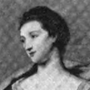
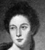
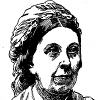
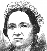

Collective Biographies of WomenAn Annotated Bibliography
Alison Booth
336.
Gracey, Annie Ryder [“Mrs. J. T. Gracey”]. Eminent Missionary Women. Introductory notes by Mrs. Joseph Cook and Mrs. S. L. Keen. New York: Eaton & Mains; Cincinnati, OH: Curts & Jennings; Chicago: Missionary Campaign Library; London: n.p., 1898.
Search OCLC WorldCat for this title.
Search Google Books for this title.
Gracey, Annie Ryder [“Mrs. J. T. Gracey”]. Eminent Missionary Women. Introductory notes by Mrs. Joseph Cook and Mrs. S. L. Keen. New York: Eaton & Mains; Cincinnati, OH: Curts & Jennings; Chicago: Missionary Campaign Library; London: n.p., 1898.
TOC: Mary Lyon; Mrs. T.C. Doremus; Fidelia Fiske; Mrs. R.B. Lyth; Ann Wilkins; Mary Louisa Whately; Melinda Rankin; Lydia Mary Fay; Mary Briscoe Baldwin; Mrs. Bishop Gobat; Miss Aldersey; Mrs. H.C. Mullens; Mrs. Bowen Thompson; Miss Sophia Cooke; Miss Charlotte Maria Tucker; Miss Mary Reed; Miss Fanny Jane Butler, M.D; Mrs. Emma V. Day; Madame Coillard; Mrs. Hannah Marshman; Miss Harriet G. Brittan; Mrs. John Geddie and Mrs. John Inglis; Miss Louisa H. Anstey; Miss Eliza Agnew; Gertrude Egede; Mrs. Murilla Baker Ingalls; Miss Beulah Woolston; Clara A. Swain, M.D.
British Library.
-
 Lady Belvedere
Lady Belvedere -
.jpg) Miss Gunning
Miss Gunning -
Maria Countess of Coventry
-
Lady Anne Foley
-
 Elizabeth, Duchess of Hamilton
Elizabeth, Duchess of Hamilton -
Mrs. Woffington
-
 Dolly Monroe
Dolly Monroe -
 Countess of Laneborough
Countess of Laneborough -
Anne Luttrell
-
Miss Farren, Countess of Derby
-
 Mary Lyon
Mary Lyon -
Mrs. R. B. Lyth
-
Mary Louisa Whately
-
Mrs. Bishop Gobat
-
 Mrs. Bowen Thompson
Mrs. Bowen Thompson -
Miss Fanny Jane Butler
-
 Miss Harriet G. Brittain
Miss Harriet G. Brittain -
 Gertrude Egede
Gertrude Egede -
 Miss Clara A. Swain, M.D.
Miss Clara A. Swain, M.D.
Search OCLC WorldCat for this title.
Search Google Books for this title.